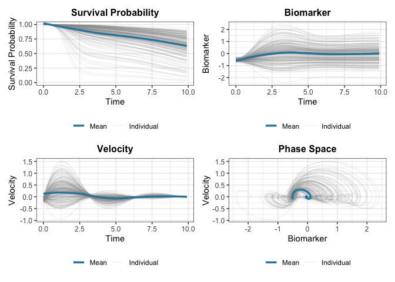

The JointODE package provides a unified framework for joint modeling of longitudinal biomarker measurements and time-to-event outcomes using ordinary differential equations (ODEs).
Overview
JointODE models biomarker evolution using ordinary differential equations (ODEs) and links them to survival outcomes. Unlike traditional approaches using splines or polynomials, ODEs naturally capture the dynamic behavior of biomarker trajectories.
Model Structure
Longitudinal Model: Biomarker trajectories evolve according to a second-order ODE:
with initial conditions and , where is the natural frequency, is the damping ratio, and is covariate-driven forcing. Stability (, ) is enforced by estimating and . Individual heterogeneity is captured through random effects on initial states and multiplicative random effects on ODE parameters.
Survival Model: The hazard function incorporates biomarker dynamics:
where controls the velocity power (0: no velocity, 1: linear, 2: quadratic).
Key Features
- Subject-specific dynamics: Random effects on ODE parameters capture individual heterogeneity
- Flexible hazard: B-spline baseline hazard with biomarker value and velocity effects
- Efficient computation: C++ implementation with parallel processing support
For full mathematical details, see the technical documentation.
Installation
You can install the development version of JointODE from GitHub with:
# install.packages("pak")
pak::pak("ziyangg98/JointODE")Quick Start
Here’s a basic example using the included simulated dataset:
library(JointODE)
#>
#> Attaching package: 'JointODE'
#> The following object is masked from 'package:stats':
#>
#> simulate
# Load example dataset (200 subjects with longitudinal and survival data)
data(sim)
# Fit joint ODE model
longitudinal_data <- sim$data$longitudinal_data[
, c("id", "time", "observed", "x1", "x2")
]
t0 <- proc.time()
fit <- JointODE(
longitudinal_formula = observed ~ biomarker + velocity + x1 + x2 +
(biomarker + velocity | id),
survival_formula = Surv(time, status) ~ w1 + w2,
longitudinal_data = longitudinal_data,
survival_data = sim$data$survival_data,
init = "marginal"
)
cat(sprintf("Elapsed: %.1f s\n", (proc.time() - t0)["elapsed"]))
#> Elapsed: 145.7 s
# Model summary
summary(fit)
#>
#> Call:
#> JointODE(longitudinal_formula = observed ~ biomarker + velocity +
#> x1 + x2 + (biomarker + velocity | id), survival_formula = Surv(time,
#> status) ~ w1 + w2, longitudinal_data = longitudinal_data,
#> survival_data = sim$data$survival_data, init = "marginal")
#>
#> Data Descriptives:
#> Longitudinal Process Survival Process
#> Number of Observations: 17319 Number of Events: 58 (29%)
#> Number of Subjects: 200
#>
#> AIC BIC logLik
#> -28945.644 -28859.887 14498.822
#>
#> Coefficients:
#> Longitudinal Process: Second-Order ODE Model
#> Estimate Std. Error z value Pr(>|z|)
#> log_omega2 0.0867 0.0075 11.540 <2e-16 ***
#> log_2xi_omega -0.1915 0.0200 -9.564 <2e-16 ***
#> (Intercept) -0.0014 0.0015 -0.910 0.363
#> x1 0.5475 0.0040 135.824 <2e-16 ***
#> x2 -0.4908 0.0037 -131.456 <2e-16 ***
#> ---
#> Signif. codes: 0 '***' 0.001 '**' 0.01 '*' 0.05 '.' 0.1 ' ' 1
#>
#> ODE System Characteristics:
#> Estimate Std. Error z value Pr(>|z|)
#> omega (natural frequency) 1.0443 0.0039 266.18 <2e-16 ***
#> xi (damping ratio) 0.3953 0.0077 51.13 <2e-16 ***
#> ---
#> Signif. codes: 0 '***' 0.001 '**' 0.01 '*' 0.05 '.' 0.1 ' ' 1
#>
#> Survival Process: Proportional Hazards Model
#> Estimate Std. Error z value Pr(>|z|)
#> value 0.9348 0.2147 4.354 1.34e-05 ***
#> velocity 2.1078 0.6317 3.337 0.000848 ***
#> w1 0.6991 0.1359 5.144 2.69e-07 ***
#> w2 -0.9099 0.2766 -3.289 0.001006 **
#> ---
#> Signif. codes: 0 '***' 0.001 '**' 0.01 '*' 0.05 '.' 0.1 ' ' 1
#>
#> Baseline Hazard: B-spline with 4 basis functions
#> (Coefficients range: [-4.635, -2.483] )
#>
#> Initial State: Population Mean
#> Estimate Std. Error z value Pr(>|z|)
#> initial_biomarker -0.4988 0.0073 -68.73 <2e-16 ***
#> initial_velocity -0.1002 0.0093 -10.77 <2e-16 ***
#> ---
#> Signif. codes: 0 '***' 0.001 '**' 0.01 '*' 0.05 '.' 0.1 ' ' 1
#>
#> Variance Components:
#> Measurement Error SD: 0.099448 (SE: 0.000545)
#> Random Effect Covariance Matrix:
#> initial_biomarker initial_velocity log_omega2 log_2xi_omega
#> initial_biomarker 0.0082210 0.0009966 0.0002002 0.0006619
#> initial_velocity 0.0009966 0.0090838 0.0001854 0.0003816
#> log_omega2 0.0002002 0.0001854 0.0016667 -0.0005260
#> log_2xi_omega 0.0006619 0.0003816 -0.0005260 0.0499643
#>
#> Model Diagnostics:
#> C-index (Concordance): 0.622
#> Convergence: Converged (relative convergence (4))
# Plot results
plot(fit)
The formula uses two reserved keywords (not data columns):
-
biomarker: includes the frequency parameter in the ODE ( term) -
velocity: includes the damping parameter in the ODE ( term) -
(biomarker + velocity | id): adds subject-specific multiplicative random effects on these ODE parameters -
x1,x2: standard covariates driving the forcing function
Learn More
-
Getting Started: See
vignette("JointODE")for a detailed tutorial -
Technical Details: See
vignette("technical-details")for mathematical formulations -
Model Comparison: See
vignette("comparison")for comparisons with traditional joint models
Performance Baseline
Use the helper scripts in scripts/ to generate reproducible runtime baselines and compare two runs:
# Generate baseline CSV (sequential + optional parallel case)
Rscript scripts/perf-baseline.R --n=20 --reps=3 --maxit=10 --tol=1e-2 --out=perf-base.csv
# Generate candidate CSV after code changes
Rscript scripts/perf-baseline.R --n=20 --reps=3 --maxit=10 --tol=1e-2 --out=perf-new.csv
# Compare elapsed_mean and fail if slowdown > 10%
Rscript scripts/perf-compare.R --base=perf-base.csv --new=perf-new.csv --metric=elapsed_mean --fail_pct=10These scripts are intended for quick engineering checks, not publication-grade benchmarking.
Code of Conduct
Please note that the JointODE project is released with a Contributor Code of Conduct. By contributing to this project, you agree to abide by its terms.